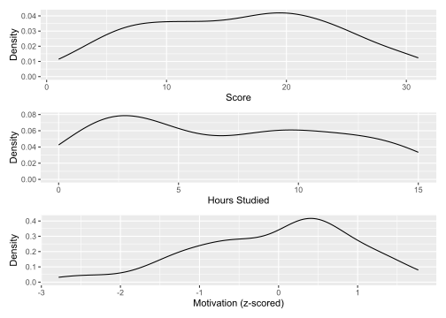
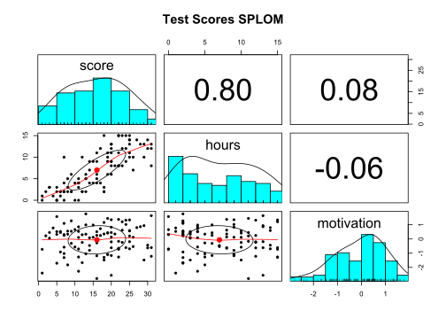

library(tidyverse)
library(psych)
library(patchwork)
library(ppcor)Week 2: MLR & Standardisation
Data Analysis for Psychology in R 2
In this document we are going to work through an example of a multiple linear regression model with standardised variables.
Packages
For this example we will need a few different packages:.
Data
Working with a subset of data used in the lecture, and reading this data into R using a link and assigning it to a dataset named dat:
dat <- read_csv("https://uoepsy.github.io/data/testscores.csv")Look at the structure of our data using str():
str(dat)spc_tbl_ [99 × 4] (S3: spec_tbl_df/tbl_df/tbl/data.frame)
$ ID : chr [1:99] "ID101" "ID102" "ID103" "ID104" ...
$ score : num [1:99] 7 23 17 6 12 24 11 23 25 15 ...
$ hours : num [1:99] 2 12 4 2 2 12 3 8 10 9 ...
$ motivation: num [1:99] -1.311 -0.235 0.723 0.457 0.297 ...
- attr(*, "spec")=
.. cols(
.. ID = col_character(),
.. score = col_double(),
.. hours = col_double(),
.. motivation = col_double()
.. )
- attr(*, "problems")=<externalptr> We can see ID is being recognised as a character vector, whilst score, hours, and motivation as numeric.
Visualisations
Marginal distributions:
score_plt <- ggplot(data = dat, aes(x = score)) +
geom_density() +
labs(x = "Score", y = "Density")
hours_plt <- ggplot(data = dat, aes(x = hours)) +
geom_density() +
labs(x = "Hours Studied", y = "Density")
motivation_plt <- ggplot(data = dat, aes(x = motivation)) +
geom_density() +
labs(x = "Motivation (z-scored)", y = "Density")
score_plt / hours_plt / motivation_plt
Bivariate Associations:
(Note, the dplyr::) section of this code is making sure R knows which package to use the select() function from)
dat |>
dplyr::select(score, hours, motivation) |>
pairs.panels(main = "Test Scores SPLOM")
Building Multiple Linear Regression Models
Only motivation standardised
m1 <- lm(score ~ hours + motivation, data = dat)
summary(m1)
Call:
lm(formula = score ~ hours + motivation, data = dat)
Residuals:
Min 1Q Median 3Q Max
-12.6784 -2.9124 -0.6448 3.0678 14.1262
Coefficients:
Estimate Std. Error t value Pr(>|t|)
(Intercept) 6.3779 0.8553 7.457 3.94e-11 ***
hours 1.3866 0.1022 13.574 < 2e-16 ***
motivation 0.9818 0.4746 2.068 0.0413 *
---
Signif. codes: 0 '***' 0.001 '**' 0.01 '*' 0.05 '.' 0.1 ' ' 1
Residual standard error: 4.67 on 96 degrees of freedom
Multiple R-squared: 0.6594, Adjusted R-squared: 0.6523
F-statistic: 92.94 on 2 and 96 DF, p-value: < 2.2e-16Interpretation
We can interpret our coefficients as follows:
- \(\beta_0\) = A student who did not study who had average school motivation was expected to score 6.38 points on the test
- \(\beta_1\) = Controlling for motivation, for every 1 additional hour studied, there was a 1.39 point increase in test score
- \(\beta_2\) = Controlling for hours of study, for every 1 SD increase in motivation, there was a 0.98 point increase in test score
Hours and motivation standardised
m2 <- lm(score ~ scale(hours) + motivation, data = dat)
summary(m2)
Call:
lm(formula = score ~ scale(hours) + motivation, data = dat)
Residuals:
Min 1Q Median 3Q Max
-12.6784 -2.9124 -0.6448 3.0678 14.1262
Coefficients:
Estimate Std. Error t value Pr(>|t|)
(Intercept) 16.0983 0.4702 34.237 <2e-16 ***
scale(hours) 6.4143 0.4726 13.574 <2e-16 ***
motivation 0.9818 0.4746 2.068 0.0413 *
---
Signif. codes: 0 '***' 0.001 '**' 0.01 '*' 0.05 '.' 0.1 ' ' 1
Residual standard error: 4.67 on 96 degrees of freedom
Multiple R-squared: 0.6594, Adjusted R-squared: 0.6523
F-statistic: 92.94 on 2 and 96 DF, p-value: < 2.2e-16Interpretation
We can interpret our coefficients as follows:
- \(\beta_0\) = A student studied for an average number of hours who had average school motivation was expected to score 16.10 points on the test
- \(\beta_1\) = Controlling for motivation, for every 1 SD increase in hours studied, there was a 6.41 point increase in test score
- \(\beta_2\) = Controlling for hours of study, for every 1 SD increase in motivation, there was a 0.98 point increase in test score
All variables (DV + 2 IVs) standardised
m3 <- lm(scale(score) ~ scale(hours) + motivation, data = dat)
summary(m3)
Call:
lm(formula = scale(score) ~ scale(hours) + motivation, data = dat)
Residuals:
Min 1Q Median 3Q Max
-1.60073 -0.36771 -0.08141 0.38732 1.78352
Coefficients:
Estimate Std. Error t value Pr(>|t|)
(Intercept) 0.007313 0.059365 0.123 0.9022
scale(hours) 0.809840 0.059663 13.574 <2e-16 ***
motivation 0.123959 0.059927 2.068 0.0413 *
---
Signif. codes: 0 '***' 0.001 '**' 0.01 '*' 0.05 '.' 0.1 ' ' 1
Residual standard error: 0.5896 on 96 degrees of freedom
Multiple R-squared: 0.6594, Adjusted R-squared: 0.6523
F-statistic: 92.94 on 2 and 96 DF, p-value: < 2.2e-16Interpretation
The intercept often becomes less practically informative because it mainly reflects the standardisation of the data rather than meaningful zero points of the predictors. Here we are often more interested in interpreting the estimated coefficients of the predictors themselves.
We can interpret our coefficients as follows:
- \(\beta_1\) = Controlling for motivation, for every 1 SD increase in hours studied, there was a 0.81 SD increase in test score
- \(\beta_2\) = Controlling for hours of study, for every 1 SD increase in motivation, there was a 0.12 SD increase in test score
Semi Partial (Part) Correlation Coefficients
This is a way of understanding the unique contribution of one independent variable to the dependent variable, after removing the overlap with other variables.
#look at the coefficients of the model
#round to 2 decimal places
round(m3$coefficients, 2) (Intercept) scale(hours) motivation
0.01 0.81 0.12 Semi-partial (part) correlation between score & hours:
#look at the semi-partial correlation between score and hours, saving in an object named 'score_hours_spcor'
score_hours_spcor <- spcor.test(dat$score, dat$hours, dat$motivation, method="pearson")
#round correlation coefficient estimate to 2 decimal places
round(score_hours_spcor$estimate, 2)[1] 0.81Semi-partial (part) correlation between score & motivation:
#look at the semi-partial correlation between score and motivation, saving in an object named 'score_motiv_spcor'
score_motiv_spcor <- spcor.test(dat$score, dat$motivation, dat$hours, method="pearson")
#round correlation coefficient estimate to 2 decimal places
round(score_motiv_spcor$estimate, 2)[1] 0.12When all variables in the model are standardised, each of the standardised slope estimates (i.e., \(\beta_1\) and \(\beta_2\)) actually equals the semi-partial correlation between the DV and each one of the IVs.